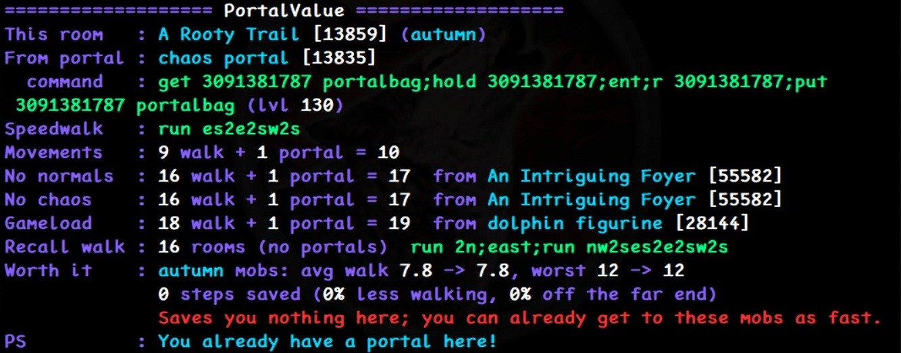
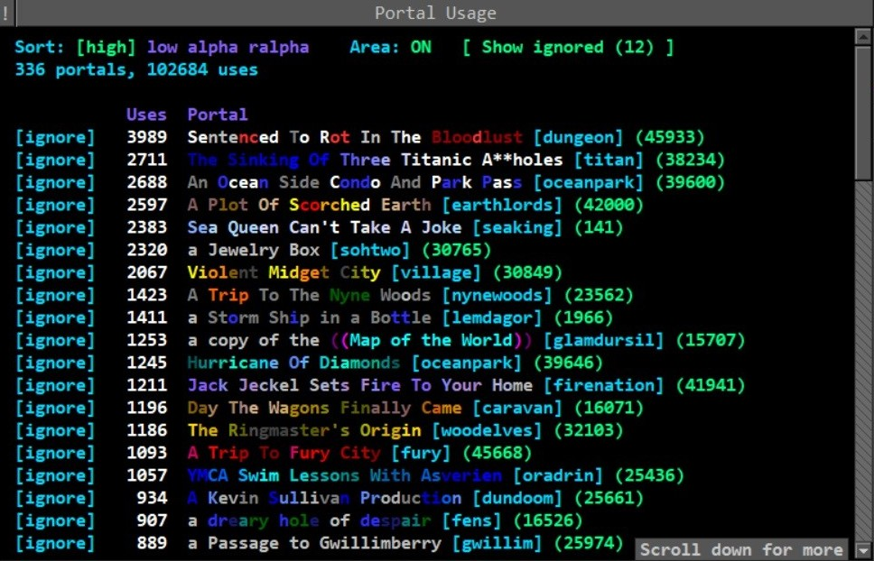
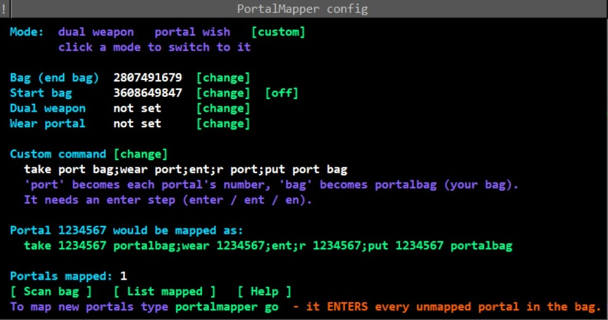

PortalValue
One stop for everything portal. PortalUse and PortalMapper are now built in, and your usage counts and mapped portals carry over.

pv — nearest portal and what one here is worth
portaluse — usage window
portalmapper config — mapper settings- Pathing:
pvfinds the closest saved portal to your room, the speedwalk, and what a portal here would be worth for the mobs you kill in this area - Catalog:
portaldexsorts your portals by type fromid
- Usage window:
portaluseshows how often you use each worn portal, with sort buttons and[ignore]per portal - Mapper:
portalmapper gowalks a bag of portals and saves each one to the mapper;portalmapper configopens a settings window
The mapper enters every portal, so mind the high-level ones.